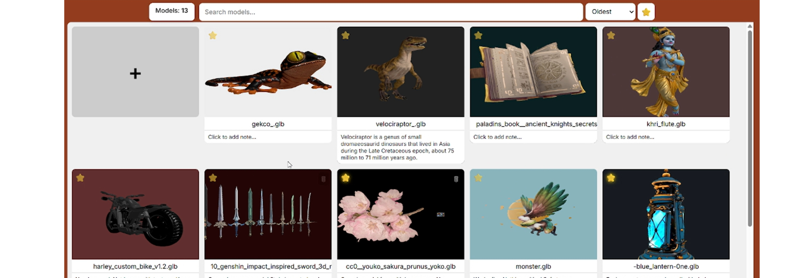
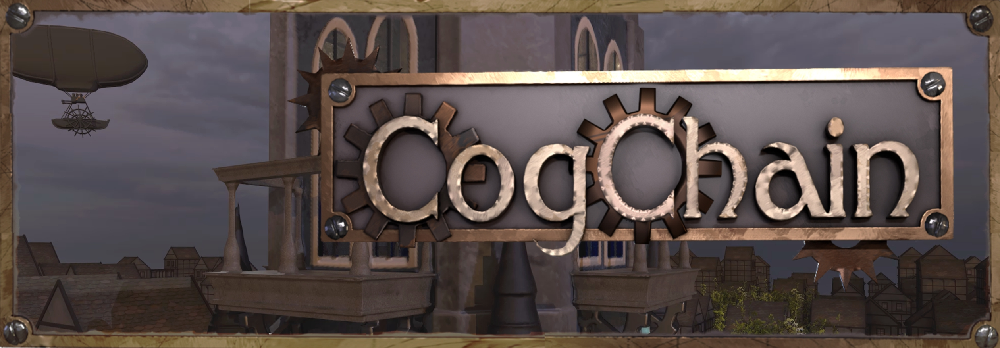
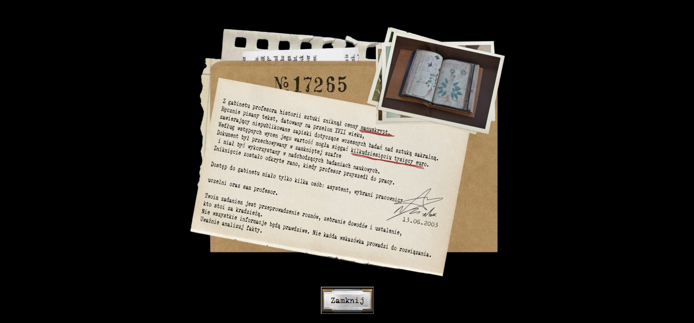
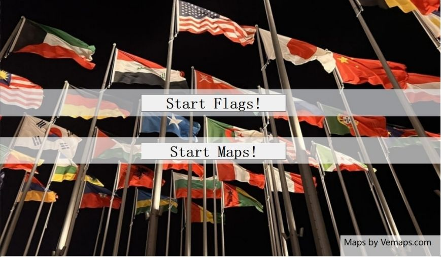

Education
B.Sc. Computer Science
Cardinal Stefan Wyszyński University in Warsaw, 2024 to 2027 (expected), GPA 4.28/5Operating systems (process management, CPU scheduling, synchronization), algorithm analysis and benchmarking (5/5), statistics and probability (4.5), data structures, databases and SQL, computer networks.
Certificates
EF SET English Certificate
EF Standard English TestOfficial English proficiency certificate.
Digital badge
CredlyVerified digital badge, also shown on LinkedIn.
Projects
 Sorting
SortingSorting & Scheduler Benchmark
Compares sorting algorithms and the SJF scheduler with measurements and graphs.
 Dzia
DziaDzia, 2D pixel game
A pixel-style game in C++ with SFML, with no game engine.
 Reversi
ReversiReversi, console game
The classic board game as a C++ console app.

3D3D Model Gallery
Full-stack web app with in-browser 3D model viewing.

CogCog Chain, 3D logic puzzle
A downloadable puzzle for Windows and Android.

DetectiveDetective game
A web game with a new random criminal on every launch.

FlagsFlags & Maps
A project about flags and maps.
 Leasing
LeasingLeasing database in Oracle
Contracts, installment schedules and payments, with the logic in PL/SQL.
Experience
Student Intern
Information Systems Center, UKSW, March 15 to April 30, 2026Implemented front-end features in HTML, CSS and JavaScript under a mentor's guidance. Worked in a Git/GitHub review cycle of commits, code reviews and revisions, and delivered tasks in phases with regular progress checks.